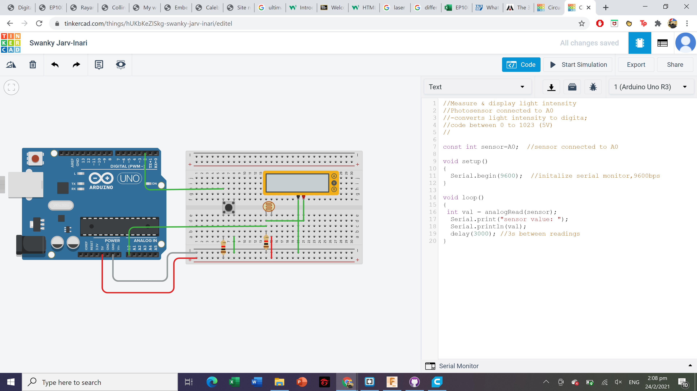

Electronics
A circuit is a closed path or loop around which an electric current flows. The term 'electricity' refers to the flow of electronics in a closed circuit. If the switch is turned on, electricity flows around the circuit. If there is a break anywhere in the circuit (e.g. broken wires, melted fuse), electricity cannot flow.
Formulaes/Laws
Ohm's Law: Voltage (V) = Current (I) × Resistance (R)
- Voltage, measured in Volts (V), is the potential difference between two points.
- Current, measured in Amps (A), is the rate of flow of electrical charge past a point.
- Resistance of an object, measured in Ohms (Ω), is a measure of the opposition to the flow of electric current.
This formula is very important because when the effective resistance in the circuit is too low, large current will be passing through the components, causing damage to them or even short circuit.
Electrical Components
- Wires: Conductors which resistance is negligible. Usually made up of copper wrapped with an insulator. Wires are used for connections and forming closed circuits.
- Switches: Electrical components that breaks a circuit when manually operated. Made up of two contacts separated by a conductor. When the conductor is closed, the circuit is completed.
- Resistors: Electric components that provides resistance to the flow. They are colour coded, like the ones I have in my Arduino kit are 220Ω and 1kΩ.
- Diodes: Semi-conductors that allow current to flow in only one direction. Light Emitting Diodes (LEDs are special diodes that give off light when the current flows in the correct direction.
- Integrated circuits: Miniaturised electrical circuits that contain thousands of other electrical components (including capacitors and transistors) configured in a particular circuit.
Embedded Programming(Arduino)
In order to simulate an arduino (UNO), we will be using tinkercad to make sure that our code works. This allows us to work on the project prototype without having the arduino with us, making it much more convinient and efficient.
For the below circuit,the voltage recorded is based on the analog reading to determine the voltage recorded by the multimeterwhich affects the brightness of the light.
For the below circuit, only the red led will turn on first, followed by only the green led and followed by only the blue led.
FOr the below circuit, the voltage is recorded based on the analog reading from the photoresistor depending on the brightness of the surrouding light, which will affect the volatge recorded by the multimeter
The following arduino code is how it will work for a pedestrian crossing.